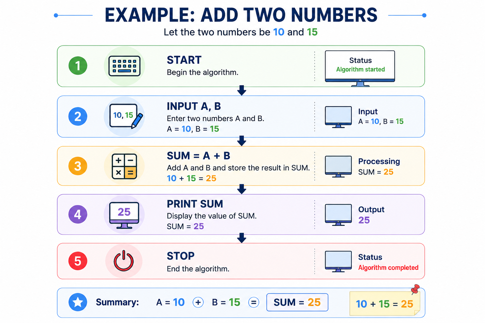

A good algorithm must follow certain basic rules so that it can correctly and clearly solve a problem. The five essential characteristics are Input, Output, Definiteness, Finiteness, and Effectiveness.
A good algorithm must follow certain basic rules so that it can correctly and clearly solve a problem. The five essential characteristics are Input, Output, Definiteness, Finiteness, and Effectiveness.
| Characteristic | Meaning | Simple Example |
|---|---|---|
| Input | An algorithm may take zero or more input values. | Enter two numbers A and B. |
| Output | An algorithm should produce at least one required result. | Display the sum of A and B. |
| Definiteness | Every step must be clear, precise, and unambiguous. | "Add A and B" is clear. |
| Finiteness | The algorithm must finish after a finite number of steps. | Stop after producing the required result. |
| Effectiveness | Every step should be simple, practical, and possible to perform. | "Add 5 to X" is an executable step. |
Input is the data given to an algorithm before processing starts. An algorithm may take zero or more input values, depending on the problem.
To calculate the sum of two numbers, the inputs can be A = 5 and B = 7.
Output is the result produced after processing the input. An algorithm should produce at least one required output.
For A = 5 and B = 7, the output is 12.
Definiteness means that every step of an algorithm must be clearly defined. There should be no confusion about what a particular step means.
Clear: Add 5 to X.
Unclear: Do something with X.
Finiteness means that an algorithm must terminate after a finite number of steps. It should not continue forever.
An algorithm for finding the sum of two numbers should calculate the result and stop. It should not continue indefinitely.
Effectiveness means that every step of an algorithm must be basic enough to be performed practically and should lead toward solving the problem.
Effective: Add 5 to X.
Not Effective: Divide X by infinity.
Consider an algorithm to calculate the sum of two numbers:

| Characteristic | In This Algorithm |
|---|---|
| Input | A and B are entered. |
| Output | SUM is displayed. |
| Definiteness | Each instruction is clear. |
| Finiteness | The algorithm ends at STOP. |
| Effectiveness | Each operation can actually be performed. |
Remember the five characteristics as: IODFE
I → Input O → Output D → Definiteness F → Finiteness E → Effectiveness
| Term | One-Line Meaning |
|---|---|
| Input | Data given to the algorithm. |
| Output | Result produced by the algorithm. |
| Definiteness | Every step must be clear and unambiguous. |
| Finiteness | Algorithm must terminate after finite steps. |
| Effectiveness | Every step must be practical and executable. |
Watch a simple explanation of the characteristics of an algorithm with examples.
A short handwritten-style revision sheet covering the five characteristics of an algorithm will be provided here.
Use the mind map for quick revision of Input, Output, Definiteness, Finiteness and Effectiveness.